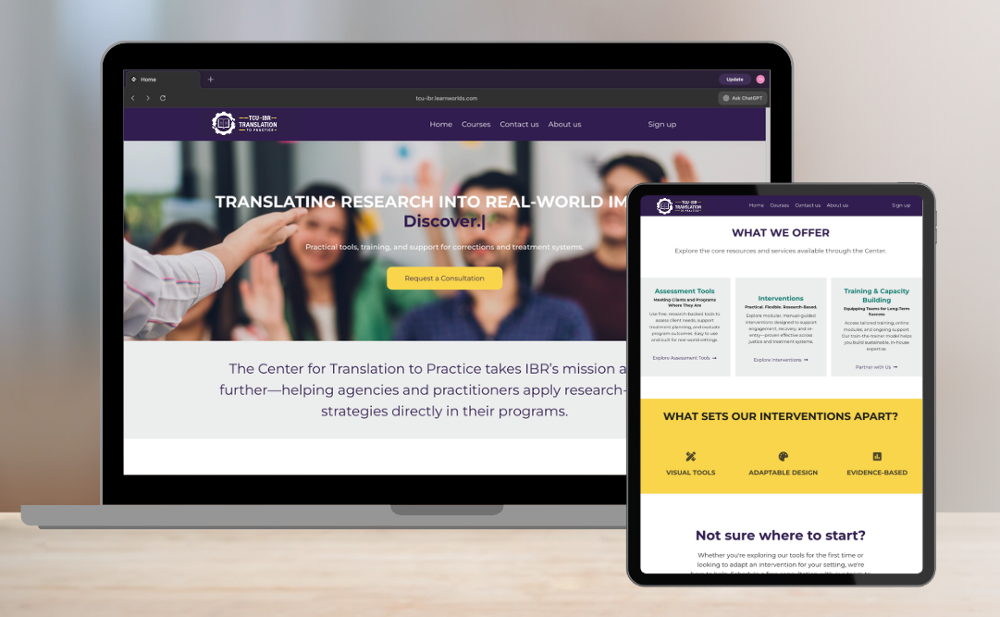

More From Me
A look inside my career as a graduate student, technologist, and psychology researcher. Here, I share
milestones, campus highlights, and continuous skill development.
Media Spotlight
First-Year Frogs Get an Inside Look at IBR
The Institute of Behavioral Research welcomed first-year TCU students to IBR during its Frogs First Open House, giving students an introduction
to behavioral health research and the SOAR Lab. Students toured IBR, met research scientists and graduate research assistants and learned about
SOAR Lab and opportunities to get involved in research during their time at TCU.
Read More

Platform Deployment
Turning Evidence Into Action Through Workforce Training and Tools
Modernized core interventions, redesigned screening and assessment tools, and established a scalable online
training platform. With early train-the-trainer efforts underway and partnerships expanding, Translation to Practice is positioned for broader
public-facing rollout and system-level implementation in the year ahead.
Read More
Conference Presentation
Upcoming Talk & Panel Highlights
Space reserved for photos, key takeaways, and event materials from upcoming conference talks and poster sessions.